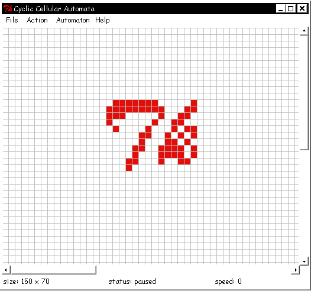
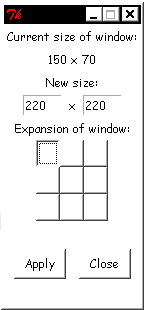
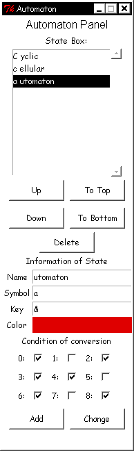

Cellular automaton is a set of cells. Each cell can be in one of several possible states. Cell can change its state, according to state of neighbors of the cell. This process is determined by transition rules. Cyclic cellular automaton is a kind of cellular automaton, its set of states is a cycle, and cell changes its state to next one, according to cycle order. It works with 2-dimentional cyclic cellular automaton with rectangular field. Transition rules should be defined through number of neighbors of the cell in same state. This program allows user to change number of cell`s states, order of states and transition rules for each state. Other options are automaton step duration, scale of field, colors of cell in defferent states.
Window of the program

Window of the program contains menubar, automaton field and status line. Status line displays current size of field, automaton status (running/paused), and speed as inverse value of delay between automaton conditions in running state.
Menubar includes File, Action, Automaton and Help items. File menu contains New, Open .., Save .. and Exit items.
New creates new CCA progect with empty field and "Life" type of automaton.
Open .. allows to load automaton from CAF file, that was created with this program.
Save .. allows to save current automaton in CAF file.
Exit finishes work of the program.
Action menu contains Start, Stop, Next step, Increase speed, Decrease speed, Zoom in, Zoom out, Clean field, Fill randomly and Change size items.
Start switches automaton to running state.
Stop stops automaton, if it is in running state.
Next step places automaton into next condition, stops automaton, if it is in running state.
Increase speed decreases delay between contitions of automaton twofold while it is in running state.
Decrease speed increases delay between contitions of automaton twofold while it is in running state.
Zoom in increases size of cells.
Zoom out decreases size of cells.
Clean field converts all cells in first state of automaton list of states.
Fill randomly converts all cells in accidental state of states list with identical probabilities.
Change size opens change size window.
Change size window

Change size window allows user to change size of the field on certain side. Side can be appointed through group of nine buttons. If choosen button side have no neighbor buttons, equal side of field will not be changed. New dimensions of field should be determinated through entry fields (X dimention x Y dimention).
Automaton item opens automaton window. It contains list of states, group of buttons of changing states order in list and change/add state area, that includes tools for changing parameters of state. "Change" button changes choosen state and "Add" button adds new one. Each state should have name, unique symbol, color and unique key. Key is keyboard key, that simplify changing cells state to conformable state.
Automaton window

To set name, key or symbol of state, use entry fields. To set state color, press to the colored area and then choose new color. To set transition rules, use checkboxes. If checkbox with label N is choosen (N = 0, 1, ... 8), then cell in the state will change it, if the cell have N neighbors in same state.
User have ability to change cells states with mouse. Pressing left button of mouse results in changing of cell state to next one. Right button changes state to previous one. If keyboard key is being pressed during motion of mouse with pressed button, cells change their state to that corresponds to the key.